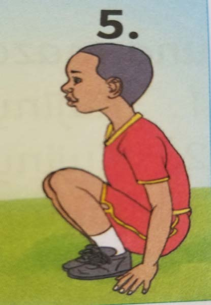

6. Repeat somersaulting by following these steps.
Exercise 5
1. Explain the difference between forward somersault and backward somersault.
2. Why is it important to play these exercise?

6. Repeat somersaulting by following these steps.
1. Explain the difference between forward somersault and backward somersault.
2. Why is it important to play these exercise?